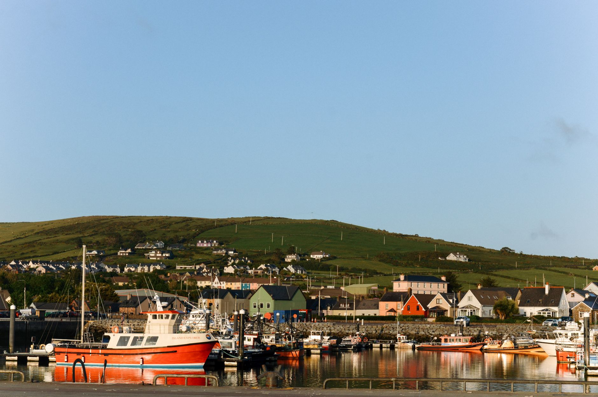
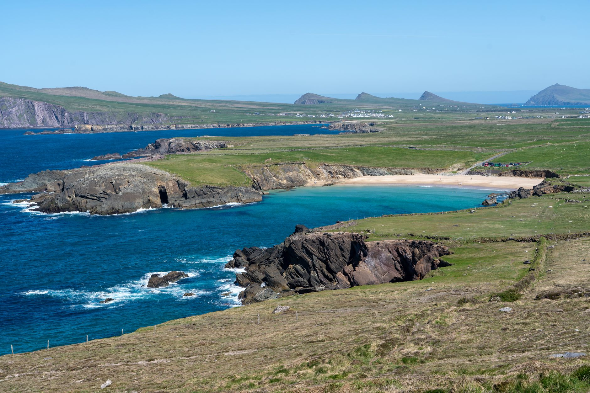
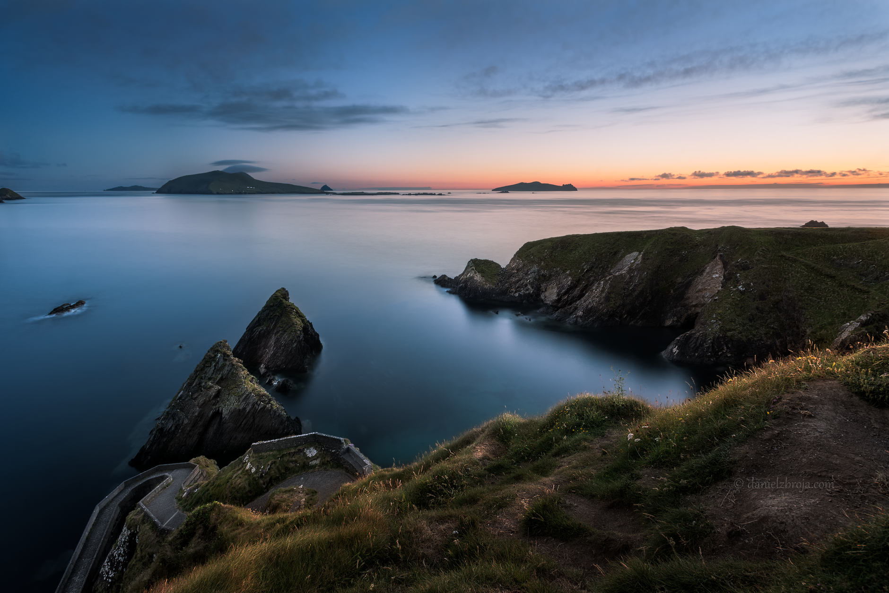
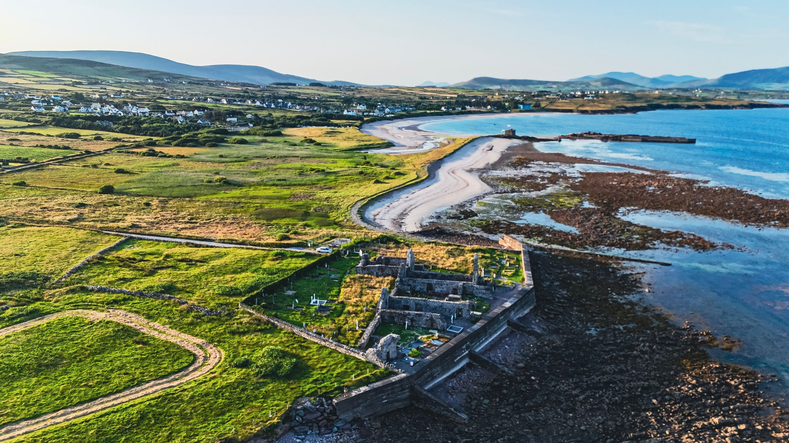

Photo: Oleksandr Kobuta / Pexels
Slea Head Drive circles the tip of the Dingle Peninsula, the westernmost point of mainland Ireland. This route runs Killarney to Dingle to Slea Head, Dunquin and Ballyferriter, about 95 km that takes you further west than the road appears to allow on a map.
Public transport barely touches this loop. A car is the only practical way to see the peninsula's edge, and the narrow roads reward a slow pace regardless.
-
 KillarneyThe usual base before the peninsula roads start, sitting on the edge of Killarney National Park.
KillarneyThe usual base before the peninsula roads start, sitting on the edge of Killarney National Park. -

DingleThe last town of any real size on the peninsula, and the last reliable stop for fuel before the loop road narrows. -

Slea HeadFull view of the Blasket Islands offshore, abandoned by their last permanent residents in 1953 after decades of dwindling population and no ferry service in bad weather. -

DunquinNext to Dunmore Head, the actual westernmost point of mainland Ireland, a few kilometres further out than Slea Head itself. -

BallyferriterGallarus Oratory sits nearby: a dry-stone church built with no mortar at all, still watertight after roughly 1,200 years.
Stop photos: Oleksandr Kobuta, Anna Lupa, Donovan Kelly, Daniel Zbroja, Dahlia E. Akhaine / Pexels
The Blasket Islands are visible from several points on this drive, but Slea Head gives the clearest, closest view without a detour.
Good to know before you drive it
- Ireland drives on the left, unlike every other route in this guide. If this is your first time driving on the left, give yourself a day in a quieter area before tackling the peninsula's narrower stretches.
- Speed limits changed in February 2025: rural local roads, the small boreens that make up much of this loop, dropped from 80 to 60 km/h. National roads (N-roads) remain 100 km/h, motorways 120 km/h.
- Large stretches of the Slea Head loop are single-lane with passing bays, similar in spirit to Scotland's NC500. In peak summer, tour coaches use this road too, and the one-way sections around the tip exist partly to manage that.
- 95 km is a short distance on paper, but the road's width and the stops both slow it down. Most of a day, not a couple of hours, is the realistic plan.
Ready to book this drive? This route runs 95 km and about 1.7 hours behind the wheel, entirely inside Auto Europe's coverage area.
We book through Auto Europe. It compares Hertz, Sixt and the other major agencies in one search, with cross-border and one-way terms visible before checkout instead of buried in each company's own fine print.
Compare car rental prices →This is an affiliate link. Booking through it may earn Travel Gap a commission at no extra cost to you.
Read the full Europe road trip planning guide for what to check before you book anywhere on the continent.